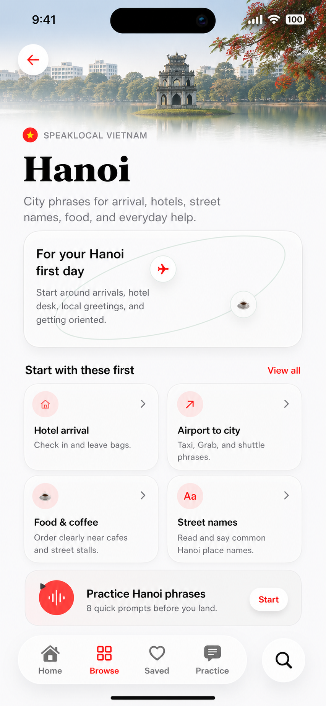
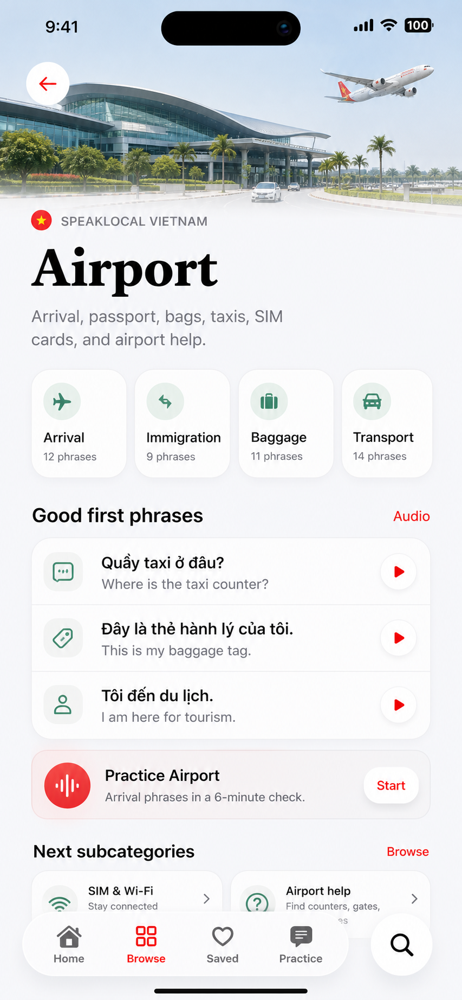
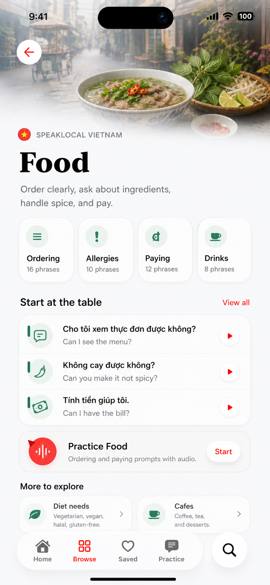
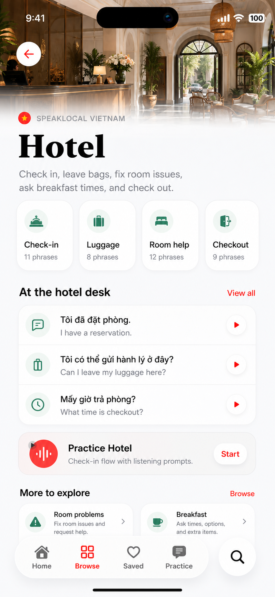
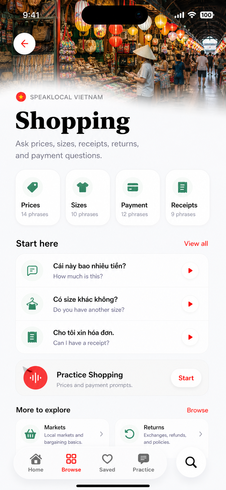
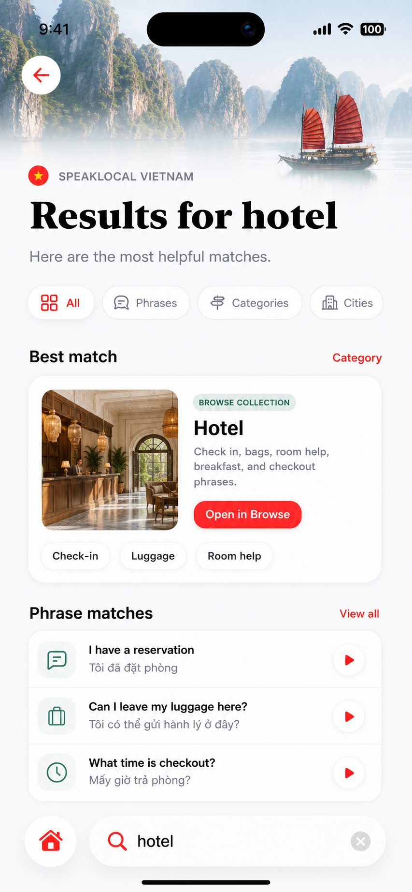
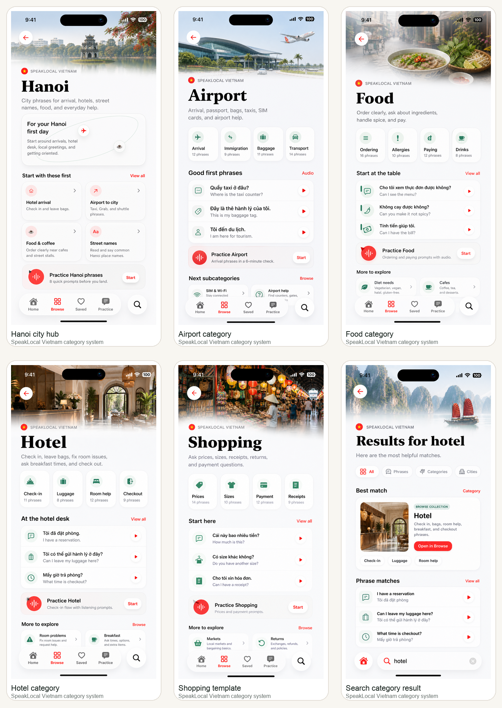

Category Pages
High-fidelity visual storyboards for Browse-owned category and city collection pages. These screens use the approved SpeakLocal Vietnam app style, locked bottom admin/search chrome, and real or hyper-real Vietnam category imagery.
Real place imagery







Implementation Notes
- Browse cards should push category or city collection routes, not prefilled Search.
- Search should add category result cards that open the Browse collection route.
- Individual phrase rows still open canonical phrase pages.
- Practice this category belongs after the starter phrase group.
- Phrase text is illustrative; canonical content should come from the content system.
- Use real or hyper-real local masthead imagery for each city and category.